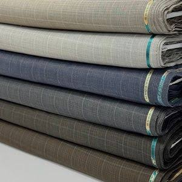
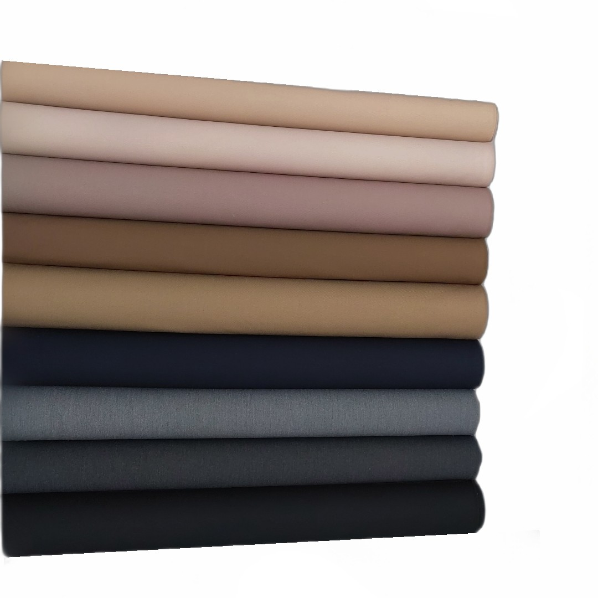
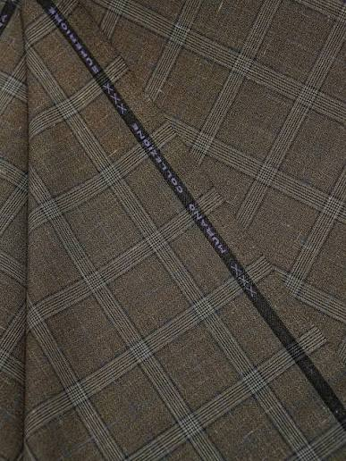

الگوی دقیق
فرم لباس بر اساس اندازهها و تناسب موردنظر تنظیم میشود.
گروه پوشاک فاخر ایرانیان، نگاه خیاطی اصیل را با طراحی معاصر ترکیب میکند؛ از انتخاب پارچه و ترسیم الگو تا برش، دوخت، پرو و پرداخت نهایی.
در فاخر، لباس فقط یک محصول نیست؛ نتیجهی هماهنگی میان فرم بدن، پارچه، الگو، جزئیات و اجرای دقیق است.
ما بر پوشش رسمی و حرفهای تمرکز کردهایم؛ انتخابی برای کسانی که کیفیت، تناسب و هویت ظاهری را جدی میگیرند.
هر سفارش از شناخت نیاز آغاز میشود و با طراحی، انتخاب متریال، اصلاح الگو و پرداخت نهایی به یک پوشش منحصربهفرد میرسد.
لباس حرفهای باید با شخصیت، جایگاه و موقعیت استفادهکننده هماهنگ باشد.
سه اصل ثابت در ساخت پوشش فاخر: تناسب، متریال و جزئیات.
فرم لباس بر اساس اندازهها و تناسب موردنظر تنظیم میشود.
وزن، بافت، افت، دوام و هماهنگی با کاربرد نهایی بررسی میشود.
دوخت، اتوکاری، دکمهها و جزئیات پایانی با دقت کنترل میشوند.
از انتخاب تا تحویل، هر مرحله بخشی از کیفیت نهایی است.
نیاز، کاربرد و سبک مشخص میشود.
اندازهگیری و بررسی تناسب انجام میشود.
پارچه، برش و دوخت بر اساس الگوی نهایی اجرا میشود.
پرو نهایی و اصلاحات لازم پیش از تحویل انجام میشود.

انتخاب پارچه فقط انتخاب رنگ نیست؛ وزن، بافت، افت، فصل و نوع استفاده، همه در نتیجه نهایی اثر دارند.


شروع مسیر با کتوشلوار و پوشش رسمی؛ با امکان توسعه به مجموعههای متنوع پوشاک فاخر.
در طراحی پوشش زنانه، زیبایی زمانی ماندگار است که با وقار، اصالت و هویت ایرانی همراه شود. پوشش کامل، تناسب دقیق، انتخاب سنجیده پارچه و ظرافت در جزئیات، کنار هم استایلی شیک و حرفهای میسازند؛ پوششی که برای بانوی ایرانی، همزمان جلوهای باوقار و امروزی دارد.
یک لباس خوب زمانی فاخر دیده میشود که خطوط آن با بدن هماهنگ باشد و هیچ جزئی غیرضروری فرم آن را برهم نزند.
خدمات از فروش محصول فراتر میروند و تجربهای کامل برای پوشش حرفهای ایجاد میکنند.
انتخاب و خرید پوشاک منتخب.
طراحی و اجرای سفارش اختصاصی.
راهنمایی برای انتخاب و تناسب.
مجموعههای منتخب برای سازمانها.
دسترسی به مجموعههای منتخب، پیشنهادهای ویژه و خدمات اختصاصی برای مشتریان فاخر.
برای خرید، سفارش اختصاصی، همکاری سازمانی یا دریافت اطلاعات بیشتر با ما در تماس باشید.